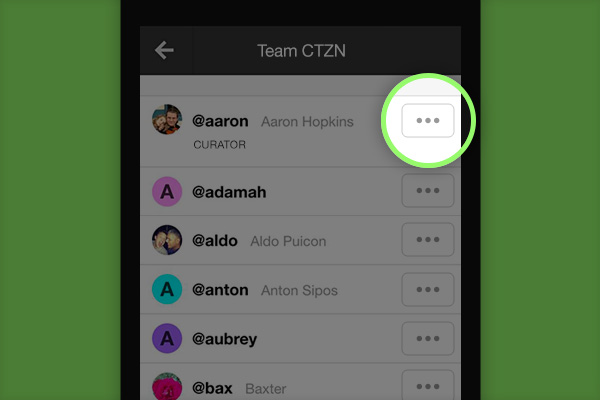

CicLAvia Curator Tips
@brian, you are now a curator!
While CTZN’s true success comes in fostering a collaborative community where people can connect and share in a collective Push, group administrators, or Curators, have a few bonus abilities to help structure the experience for everyone.
Here is an overview of what Curators can do.
Invite People via Email

As a Curator, you can invite your community into your Push with a tap of a button. Simply tap “Invite More People via Email” and CTZN will instantly connect to your email client (works extra well on mobile). From here, you can add in as many email addresses as you’d like and tap send. CTZN will send everyone an invite email that contains a direct link into your Push.
Promote People to Curators

Share the power of curator with your organization’s most trusted members by tapping the “...” button, and selecting Make Curator.
Moderate Users
Is there someone in your Push who is posting or pulling in unrelated content? As Curator, you can moderate a person’s content, keeping the Push relevant and focused.
Hide Posts

Curators can choose to Hide posts from the feed by clicking on the “...” button at the bottom of a post and selecting Hide. This will make the post invisible to everyone but the original poster and those users who have already interacted with the post. This will also prevent the post from appearing in the Morning Digest.
Respond to Reports of Inappropriate Content
Take immediate action when your Push community alerts you of inappropriate content.
Curate the Live Channel

A Curator, however, is ultimately responsible for Curating the Push’s best content. Next to the “Love” and “Comment” buttons, Curators have an additional Star Button which allows them to Feature posts. When a post is Featured, it becomes publicly viewable on your Push’s public site. From this public site, featured content can be made into a Live Channel that can be updated automatically and broadcast on your website (through a widget) and on monitors and projectors.
view your live channel

CTZN Tip:
Easily post or reply to posts straight from your inbox. Learn How
Get the CTZN app!


Mute all email notifications